Real places, drawn as isometric pixel art in your browser.
pixelworld builds worlds from open data (elevation, land cover, OpenStreetMap and Overture roads and buildings, and cities' own building records) and bakes them into pixel-art tiles as you move: fly over a city, drive its streets or walk its blocks, in four rotations, by day or by night.
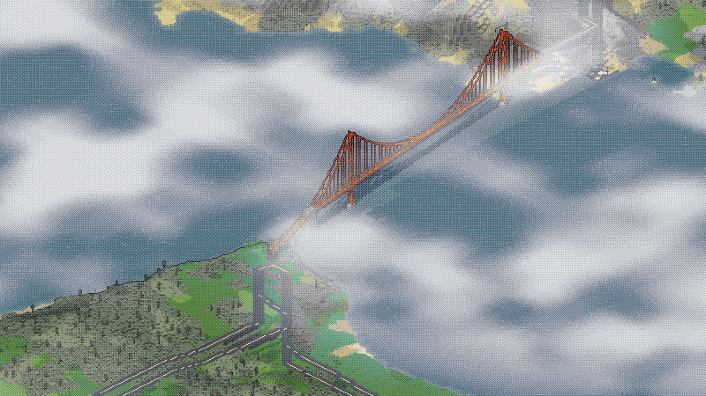
A desktop browser with WebGL2 works best. Tiles are baked on your machine as you move, so a new place can take a few seconds to draw.
The worlds
San Francisco, New York, Kyoto, Tokyo, Paris, Hong Kong, the US Southwest and five national parks, each built at up to three scales.
Pick a place →pixelworld on npm
The engine as a library: a world in a canvas, with your own controls, entities and rules. The games here are built on it.
Use it in your project →Your own place
The pipeline, pixelworld-pipeline on PyPI, builds a world of anywhere from a region spec in YAML.
How it draws
The pipeline reads elevation, land cover, the map's roads, water and buildings, and where a city publishes them, its building records (heights, ages, uses, materials). It lays them on a grid, compresses the geography between landmarks so a region stays small enough to cross, and writes a world package of static files. The browser bakes that package into pixel-art tiles in a WebGL2 worker. A style pack sets the palette, the materials and which generator draws each kind of building, tree and landmark.
Three scales of the same place
Each a world of its own. L switches between them where you stand.
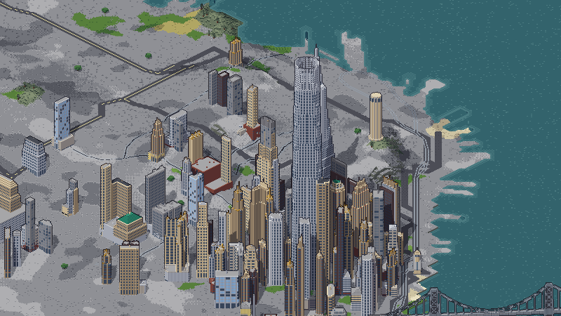
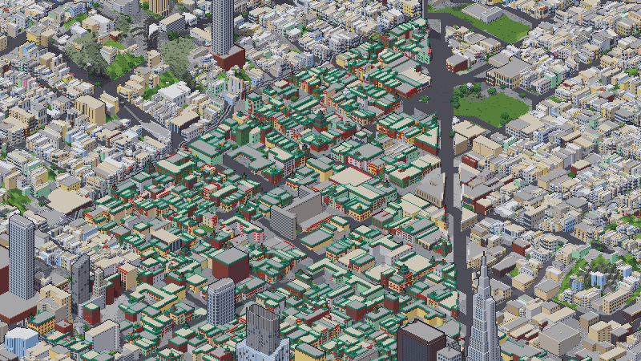
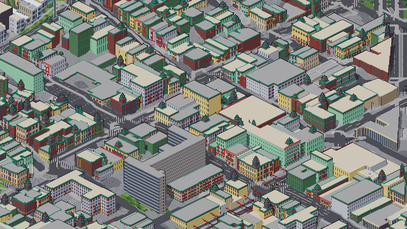
Four rotations
Each baked, not a turned image: Q and E turn the view. Yasaka Pagoda, Kyoto.
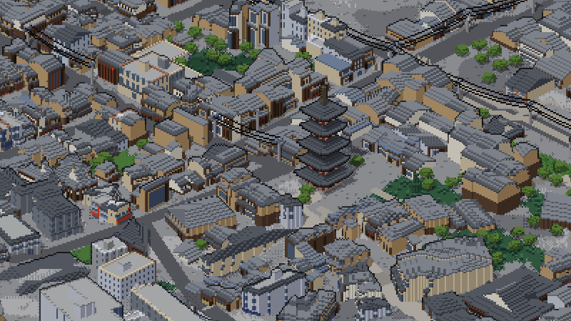
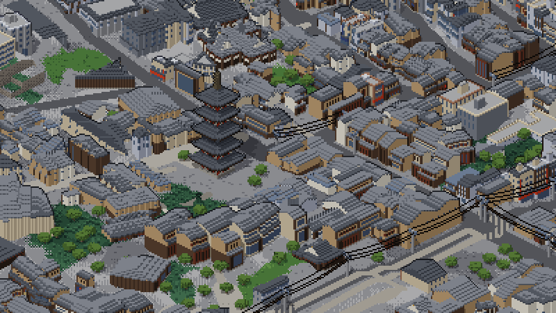
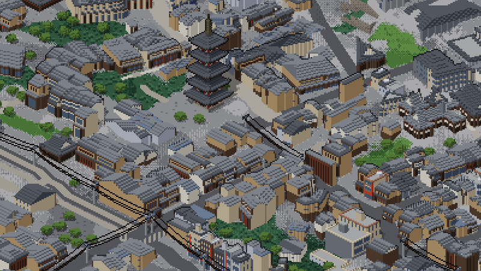
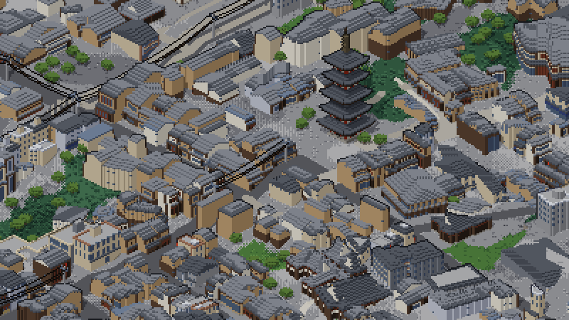
Gallery
Every image is a screenshot of the viewer.
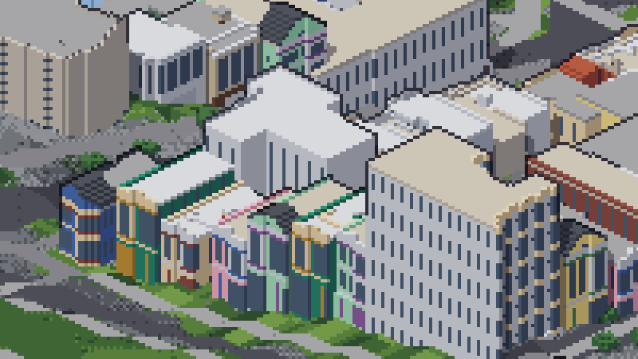
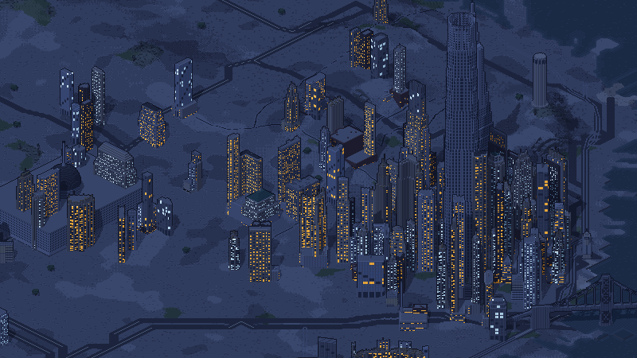
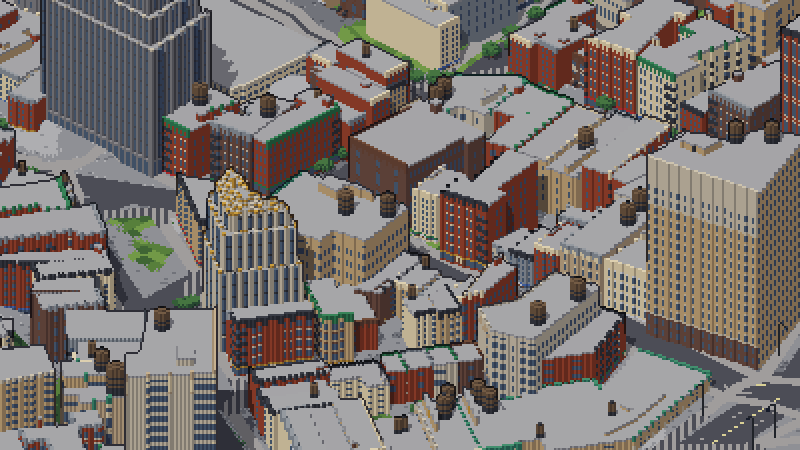
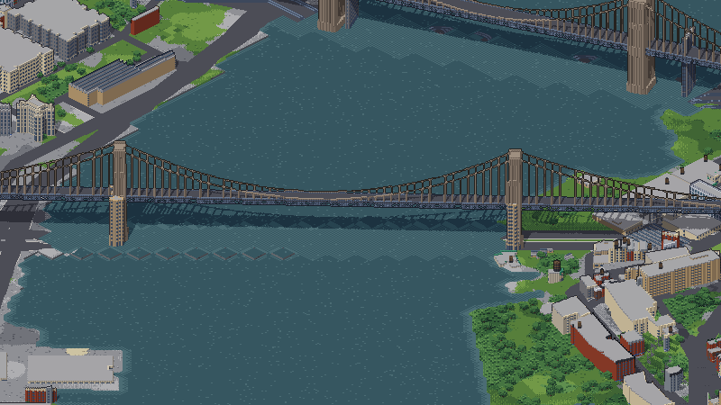
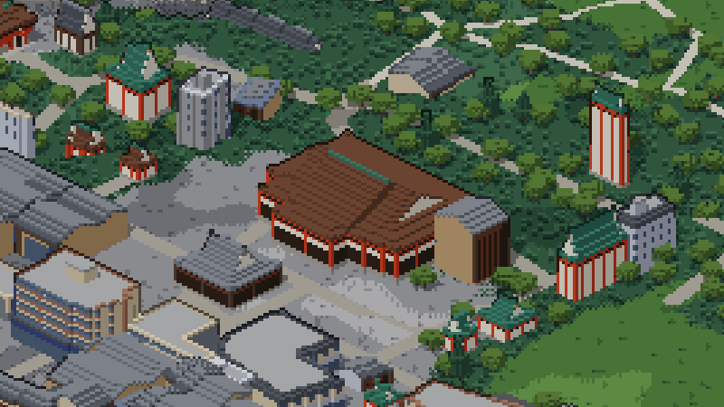
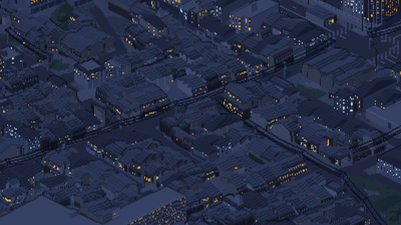
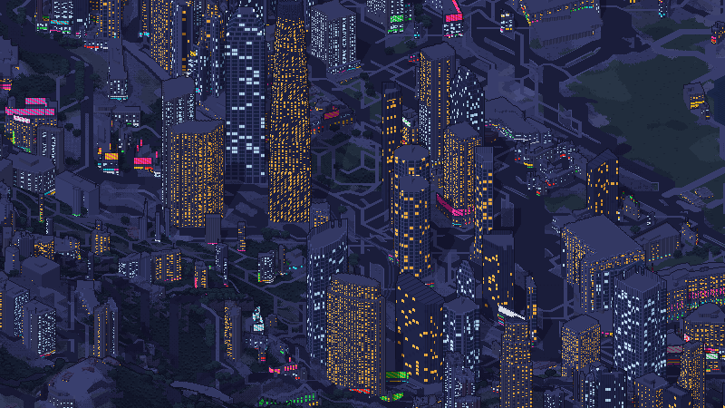
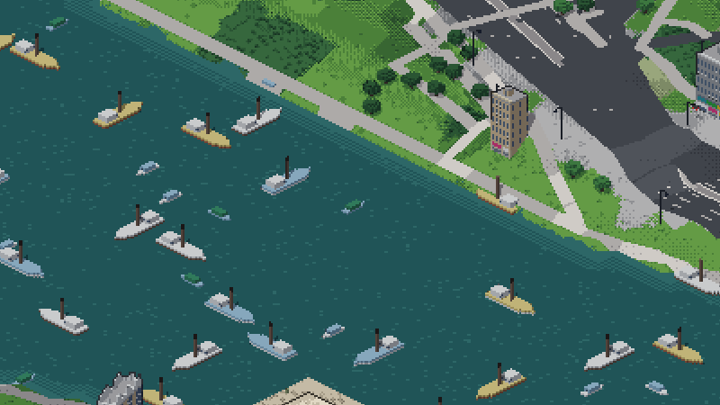
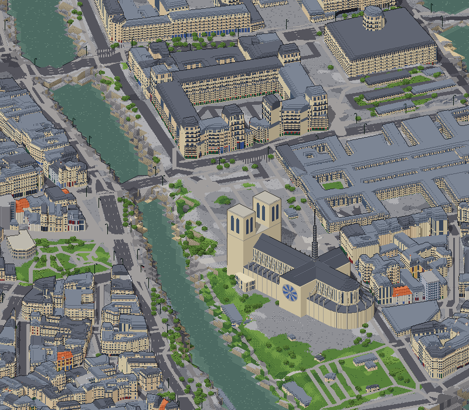
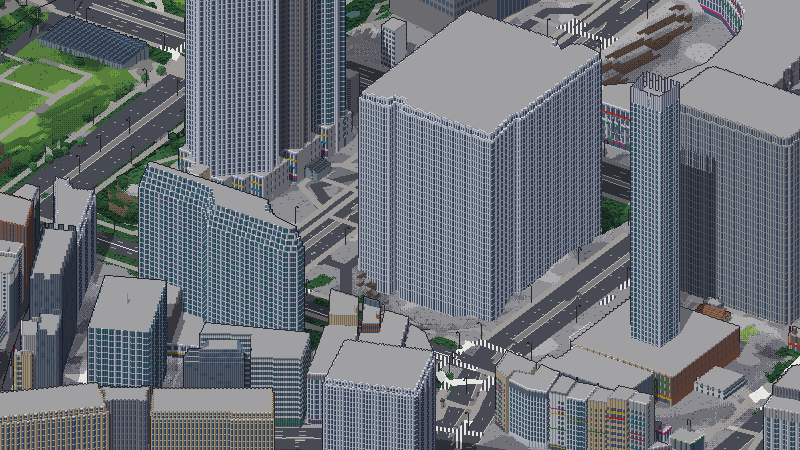
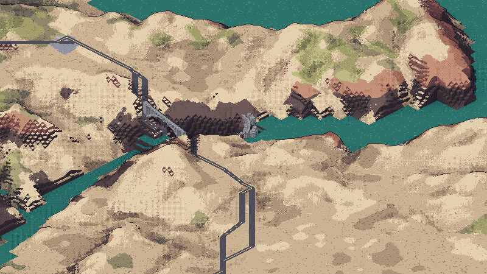
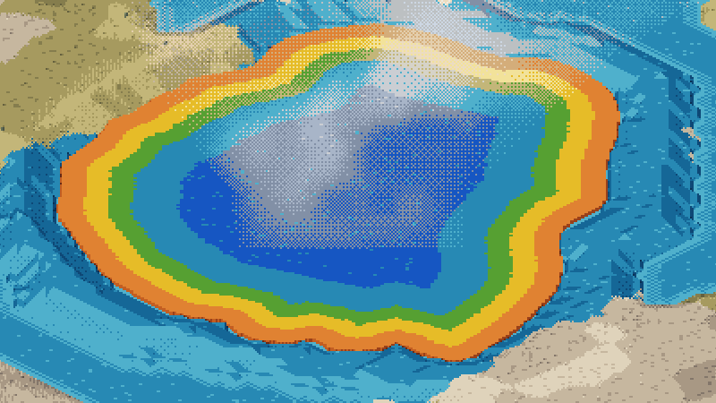
Use it in your project
The engine, the world format, the generators and traffic are one npm package, pixelworld, ESM with types. Worlds and style packs are data you host.
npm install pixelworldimport { createWorldView, roverController } from "pixelworld/engine";
const canvas = document.querySelector("#world");
const view = await createWorldView({
canvas,
worldUrl: "/worlds/grand-canyon-m0/",
style: (id) => fetch(`/styles/${id}/style.json`).then((r) => r.json()),
controller: roverController({ listen: { keys: window, pointer: canvas } }),
});Using pixelworld from npm · The engine API · Example projects · Multiplayer
Build a world of your own place
A region spec says where, at what scale and from which data. The pipeline downloads only what the area needs and writes a world package the viewer opens.
pip install pixelworld-pipeline
pixelworld build region.yaml --out my-world
pixelworld view my-worldMake your own world (Jerome, Arizona, worked through) · Pipeline plugins · Places built and proposed